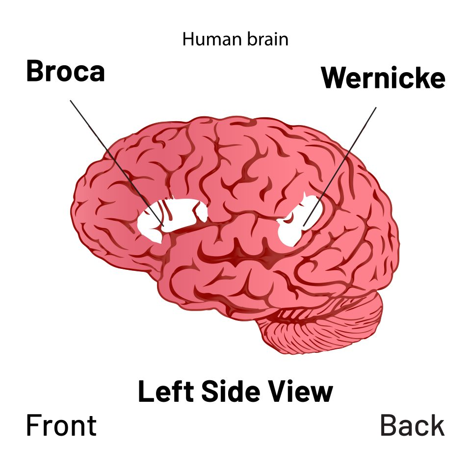

Qué es
La neurorrehabilitación es el conjunto de terapias que ayudan a recuperar o compensar las funciones perdidas por una lesión del sistema nervioso. Se basa en la plasticidad cerebral: la capacidad del cerebro para reorganizar sus conexiones con el entrenamiento.


Quién forma el equipo
- Fisioterapia: fuerza, movilidad, equilibrio y marcha.
- Terapia ocupacional: actividades de la vida diaria (vestirse, asearse, cocinar), adaptación del hogar y productos de apoyo.
- Logopedia: lenguaje (afasia), habla y deglución.
- Neuropsicología: memoria, atención, funciones ejecutivas y conducta.
- Medicina física y rehabilitación, enfermería, trabajo social y psicología.
Principios
- Empezar pronto: en el ictus, en los primeros días si el paciente está estable.
- Intensidad y repetición: el cerebro aprende practicando muchas veces tareas significativas.
- Objetivos concretos acordados con el paciente y la familia.
- Mantener la actividad a largo plazo: la mejora puede continuar durante meses o años.
Técnicas actuales
Terapia por restricción del lado sano, entrenamiento de la marcha en cinta con soporte de peso, robótica y exoesqueletos, realidad virtual, estimulación eléctrica funcional, estimulación cerebral no invasiva y telerrehabilitación. En 2021 la FDA autorizó la estimulación del nervio vago asociada a rehabilitación para mejorar el brazo tras un ictus.
Fuentes
- Stinear CM, et al. Advances and challenges in stroke rehabilitation. Lancet Neurol. 2020;19:348-60. doi:10.1016/S1474-4422(19)30415-6.
- Organización Mundial de la Salud. Rehabilitación.